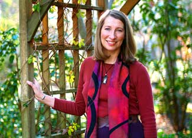

Learn To Live The Not-So-Big Lifestyle
Author, architect and visionary Sarah Susanka explains the “not-so-big” lifestyle and how it’s evolved.
By Troy Griepentrog
Oct. 14, 2008
Sarah Susanka is an architect and author. Ten years ago, she wrote The Not So Big House, which has recently been updated. Mother Earth News spoke with Sarah about her philosophy of “not so big” and how it relates to architecture and lifestyle.
What inspired you to become an architect?
I grew up in England and moved to Los Angeles in 1971, so I was a teenager at the time. In England, things are a little bit smaller in terms of house design. One of the things that I noticed right away was that a lot of the space in American houses seemed to go unused. In some of my friends’ houses, the living room and dining room furniture still had plastic covers on. Why did they have it if they weren’t going to sit on it? That precipitated an interest in architecture, and I ended up going to architecture school. I was always really interested in house design.
What prompted you to write The Not So Big House?
I moved to Minnesota shortly after I graduated from the University of Oregon, and started my own firm with a partner. We started serving middle-class America and discovered that there was a large part of the population that wanted a better house design but didn’t know that architects were the people to go to - mostly because architects were known, at the time, for building big, expensive houses. We wanted to help people build smaller, better-designed houses, and we found a huge market.
After 15 years of serving that clientele, I got completely sick of telling clients “what you need is not square footage, what you need is character and quality.” So, I decided to write a book to put that whole theory down on paper.
There was an avalanche of interest from people who knew they wanted a different type of house but didn’t know how to ask for it, and didn’t know what to say to get that different kind of house.
How has your philosophy changed over the last 10 years?
I don’t know that it’s changed. We immediately realized that we were on to something. And there were few architectural builders serving this niche. So, based on our ability to grow in the Minneapolis and St. Paul market, I realized there was a substantial audience for a book like this.
What I didn’t realize was how many people would get on board once they read The Not So Big House. Architects and builders would tell me, “All I have to do is give your book to a client before we start work and they instantly understand what they want is a smaller, better designed house. They don’t need 4,000 square feet; they need 2,500 square feet.” Just putting these concepts into simple, nonarchitect language, helped people understand how to make a house better.
When people hear “not so big,” they might think “small.” Are you suggesting that most people should downsize?
Well, to a degree, but not completely. Yes, downsize. No, it doesn’t mean small. This is really about what I call “right-sizing,” understanding that the absolute scale is not the point. The point is to take your personal needs and match them to a house that’s just the right size for you and your family. For me, that may be a very different scale than for someone who is extremely wealthy. They may be able to spend more and build more space. For them, that is the right answer. I don’t want to pass judgment on them. I just want to give them the tools to make their house the best it can possibly be.
You suggest that budgets reserved for larger spaces would be better spent on higher quality. Are “not-so-big” houses less expensive?
No, and one of the things that I have to let people know is that this book is not about saving money. Often people hear “not so big” and think “not so expensive,” and I tell people this is really about reapportioning dollars: square footage into quality and character. But the completed house will be just as expensive. I’m just helping you to rethink how you’re spending the money that you have available.
Are there any financial advantages to owning a not-so-big house?
The long-term maintenance costs of a not-so-big house should be substantially lower than an average house. There’s less square footage to heat and cool. The walls, ceilings and windows are better designed and more energy efficient. There is a hidden benefit to a not-so-big house: It will maintain itself much better over time. That’s a big part of the not-so-big mentality; it’s not all show. There’s real substance beneath the walls. These houses will be around 300 years from now.
You stress making homes beautiful. Why are the aesthetics of a home so important? Isn’t utilitarian design more “green”?
There’s something that’s become even clearer to me in the last 10 years: Beauty is, by its very nature, an extremely green action. Beautiful houses built 100 to 200 years ago are still around. The ugly ones are torn down rather quickly. So, you can build a green house that has all the energy-efficiency bells and whistles, but if it’s ugly, it’s not going to be around 60 years from now. My point is that “not so big” should really be the first step to sustainability. It needs to be right-sized and give you a sense of well-being, including a place to live in aesthetically.
If a house is built to meet the specific needs of an owner, how is it able to adapt over time so that it can last for generations?
When an architecture firm is looking for a space for their offices, they frequently pick an older house and remodel it. Remodeling is an amazing tool; we can personalize the space to fit our present needs. The character of the original structure is really important; if it’s not there, people tend not to see the potential.
We can really shift houses and their energy substantially, but we tend to keep the characteristics that delight us. A good house tends to get better over time. This is something that nobody mentions in 99 percent of the literature I’ve read about sustainability, but it’s incredibly important.
What’s the biggest challenge for people when adapting to a “not-so-big” house?
The biggest challenge is getting rid of some of their stuff. I also wrote The Not So Big Life, which asks people to look at how they engage their lives. It’s really about how we use our time, but I also talk about how we tend to accumulate stuff to fill a void we feel inside ourselves. We want to feel a certain meaningfulness in our lives, but because we can’t find that, we tend to try to buy it. So, the bigger house is a version of this. Once people have the bigger house, they don’t want it to feel empty, so they buy stuff to fill up the big house.
When you’re downsizing or moving into a not-so-big house, there’s no place for a lot of that stuff. So, you have to put on a different set of glasses and look at what has meaning to you, and what you want to surround yourself with that’s really going to enhance your life. Some people are ready, willing and really want to do that. For some, it’s much harder.
Explain the concept of an “away room.”
We have so many noise generators in our houses these days. If you’ve got kids playing Nintendo or have a TV going, it’s hard to have a conversation in the same open space as those noise generators. So, an away room is an idea of making a den, a small room, that opens off the main living area (ideally with French doors) so you can still see each other, but acoustically separate from the main living space. That means if you want to read a book or have a quiet conversation, you can do it in the away room. Or you can enclose the kids in that room and let them make noise while the adults are off making dessert or having a conversation.
The French doors are important because the away room is nothing but an audio escape. If you want a room that’s really private, you can put it on a different level. That’s not what this is about; it’s about still having the connection with the rest of the household, but only visual connection, not audio. And that’s a huge way of reducing the size of the house; our houses have gotten bigger because we try to escape each other’s sounds.
What’s different in the new version of The Not So Big House?
One of the things about the new 10th anniversary issue of The Not So Big House is the last chapter, a new chapter, which describes three houses that came about as a result of people reading the first book and hiring architects to help them design really good examples of not-so-big houses. Each one of them is green, very sustainably built.
This was at the core of the first book, but that book came out before we really understood what sustainability was all about. It hadn’t completely sunk into the culture. The new chapter expands on what the original book only pointed to, relating to green design.
Where can I learn more about the not-so-big philosophy?
Visit the Not So Big Web site. There’s an enormous amount of material there for people interested in building their own house or remodeling an existing house not so big. It includes a home professional’s directory to help people find architects, builders and designers in their locale.
You can order the 10th anniversary issue of The Not So Big House from Amazon.com.
If you’d like to simplify your life or live in a smaller home, you might also be interested in reading Simpler Living and Home Petite Home.
Are you already living in a “not-so-big” home? Share your experiences in the comments section below.|
 CHERYL MUHR Architect and author Sarah Susanka has written a series of books on the “not-so-big” philosophy. |
 THE TAUNTON PRESS The Not So Big House has recently been updated with additional information. |
|